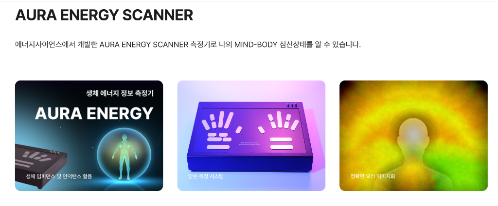

Consulting
마인드 컬러 컨설팅
심리 에너지 및 라이프스타일 맞춤 치유 컬러 도출

마인드 컬러 컨설팅
KFTA 오프라인 대면 컨설팅
최근 스트레스 받으시나요? 일상에 필요한 회복의 컬러는 무엇일까요? 내면의 상태를 점검하고 나를 치유하는 마인드 컬러를 찾아드리는 1:1 심층 컨설팅입니다.
진단 및 컨설팅 내용
- 현재 심리 및 스트레스 지수 측정
- 무의식의 컬러 선호도 심층 분석
- 일상 회복을 위한 힐링 컬러 팔레트 처방
- 컬러 테라피 실전 적용 가이드
프로그램 상세 안내
혹시 무기력하거나 원인 모를 스트레스에 시달리고 계신가요?
우리가 무의식적으로 고르는 옷의 색상은 현재의 심리 상태와 에너지를 고스란히 반영합니다. 마인드 컬러 컨설팅은 단순한 외면의 퍼스널 컬러 진단을 넘어, 당신의 '마음의 색'을 읽어내는 KFTA만의 독보적인 멘탈 케어 프로그램입니다.
색채 심리학을 기반으로 현재 나에게 결핍된 에너지가 무엇인지 진단하고, 일상에서 옷과 소품의 색상을 활용하여 스스로 감정을 다스리고 회복할 수 있는 맞춤형 힐링 컬러 솔루션을 제공합니다.
이런 분들께 추천합니다!
- 반복되는 일상에 지쳐 새로운 에너지가 필요하신 분
- 최근 들어 유독 무채색이나 어두운 계열의 옷만 찾게 되는 분
- 패션과 색상을 통해 긍정적인 심리 변화를 경험하고 싶으신 분
특별한 진단 프로그램
AURA ENERGY SCANNER
에너지사이언스에서 개발한 AURA ENERGY SCANNER 측정기로 나의 MIND-BODY 심신상태를 과학적으로 분석합니다.

생체 에너지 정보 측정
생체 임피던스와 인덕턴스를 활용하여 몸에서 발생하는 미세한 전기적 신호를 감지합니다.
양손 측정 시스템
안정적이고 정밀한 양손 스캐닝을 통해 좌우 뇌와 신체의 불균형 상태를 데이터화합니다.
정확한 오라 이미지화
눈에 보이지 않는 나의 감정과 에너지(Aura)를 직관적인 컬러 이미지로 변환하여 보여줍니다.
무엇을 얻어갈 수 있나요? (제공 내역)
- 개인 맞춤형 컬러 처방전: 현재 심리 상태를 보완하고 에너지를 채워주는 나만의 힐링 컬러 리포트 제공
- 일상 적용 솔루션: 추천 컬러를 데일리 룩, 넥타이, 스카프, 인테리어 소품 등에 당장 적용할 수 있는 구체적인 코디법 안내
- 퍼스널 향수 (미니): 처방된 마인드 컬러에 어울리는 감정 치유용 아로마 롤온(또는 미니 향수) 1종 제작 및 증정
- 사후 관리: 2주 후 일상에서의 감정 변화와 컬러 활용도를 점검하는 온라인 피드백 1회
마인드 컬러 컨설팅
가격: 250,000원 / 소요 시간: 90분